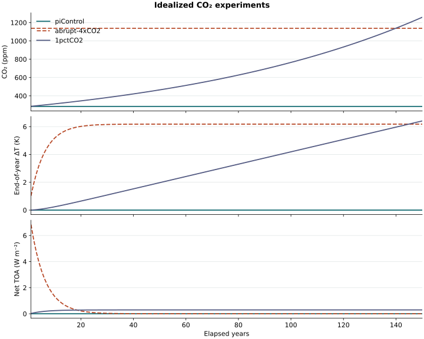
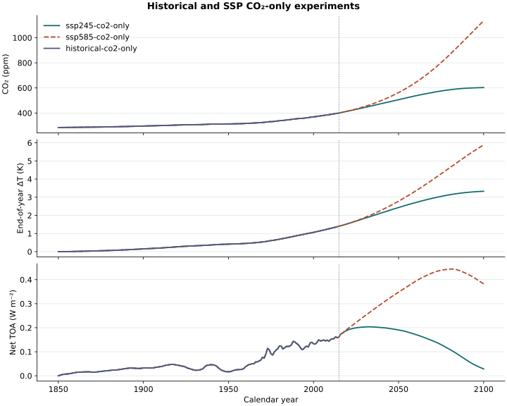

04 · 结果与验证¶
以下结果由 DAOSHU M0（v0.1.0） 实际积分得到。默认时间步为 365 天的十二分之一，温度异常以 288 K 为参考。确定性控制实验全程维持 288 K，因此本组结果的异常也等于相对于同龄控制积分的温度差。
六组实验的终点¶
| 实验 | 积分区间 | 末步使用的 CO₂（ppm） | 末步结束温度（K） | 增温（K） |
|---|---|---|---|---|
piControl |
500 模型年 | 284.317 | 288.000 | 0.000 |
abrupt-4xCO2 |
150 模型年 | 1,137.268 | 294.181 | 6.181 |
1pctCO2 |
150 模型年 | 1,263.714 | 294.408 | 6.408 |
historical-co2-only |
1850–2014 | 397.547 | 289.375 | 1.375 |
ssp245-co2-only |
1850–2100 | 602.782 | 291.329 | 3.329 |
ssp585-co2-only |
1850–2100 | 1,135.210 | 293.884 | 5.884 |
每行表格的浓度是最后一个积分步开始时给定的值，温度是该步结束时的状态。末步浓度和温度的时间标记相差一个步长。在 1pctCO2 中，严格取 150 年边界的浓度需要直接代入公式，结果会略高于表中的末步浓度。
理想化实验¶

图中显示前三组实验的前 150 年。四倍阶跃首先形成约 7.417 W m⁻² 的净入射能量，随后升温提高长波散热，净通量趋近于零。单箱的热响应时间约为 5.55 年，倍增的平衡响应为 3.090 K。1pctCO2 在第 61–80 模型年的温度异常平均为 2.859 K，可当作本单箱的 TCR 类诊断。150 年末渐增实验的浓度已经超过 4 倍，且末步步首仍有约 0.295 W m⁻² 的正净通量。
历史与 SSP 浓度路径¶

1850–2014 的三条曲线重合。实验脚本核对这一段的所有 1,980 个时间步，并检查两个情景都从 2015 年采用各自的 CO₂ 路径。图中 2015 年虚线标出分支。历史实验末的 1.375 K 和两个情景的终年结果都属于该参数组在只改变 CO₂ 的教学设定下的响应。用图检验时，可以观察浓度差如何先改变辐射，再经热容量转换成逐步累积的温度差。完整强迫设定和数据来源
四项可重复的检查¶
| 检查 | 预期与实际结果 |
|---|---|
| 平衡和漂移 | piControl 的 6,000 个时间步均保持 288 K，净辐射通量和预算残差均为零。 |
| 解析阶跃解 | 四倍 CO₂ 的长时间平衡异常为 \(5.35\ln(4)/1.2\)，积分终值与它相差小于 \(10^{-8}\) K。 |
| 一阶收敛 | 使用 10 年阶跃解析解，比较粗细时间步的误差。CTest 检查每次将步长减半后误差比接近 2。 |
| 逐步收支 | 六组实验的最大绝对残差约为 \(2.27\times10^{-12}\) W m⁻²，小于实验脚本的 \(10^{-10}\) W m⁻² 容差。 |
逐步残差验证离散能量账：对每一步，用步末和步首温度的差计算储热率，再扣掉实际使用的净辐射。它可与解析解检验一起使用。前者定位离散实现、单位和符号问题，后者衡量步长造成的时间积分误差。
如何读 CSV¶
| 列 | 时间或约定 |
|---|---|
step、year |
从 1 起算的步数和该步所在的整数年。理想化为模型年，历史和 SSP 为标称历年。 |
elapsed_start_years、elapsed_end_years |
自初始化起算的步首和步末时刻，从 0 开始。 |
temperature_start_k、temperature_end_k、temperature_anomaly_end_k |
步首绝对温度、步末绝对温度和步末温度减参考温度。 |
co2_ppm、co2_forcing_w_m2 |
步首浓度和用于这一步的 CO₂ 强迫。 |
absorbed_shortwave_w_m2、outgoing_longwave_w_m2、net_toa_w_m2 |
步首短波吸收、向外长波和净向下辐射，净向下为正。 |
heat_uptake_w_m2、budget_residual_w_m2 |
由这一整步温差推得的储热率，以及储热率减步首净通量。 |
annual.csv 对等长步的浓度及净通量取年平均。温度用每一步两端的均值近似该步平均，然后对全年各步再次平均。图中的温度曲线使用单独一列 end_anomaly_k，表示年末状态。